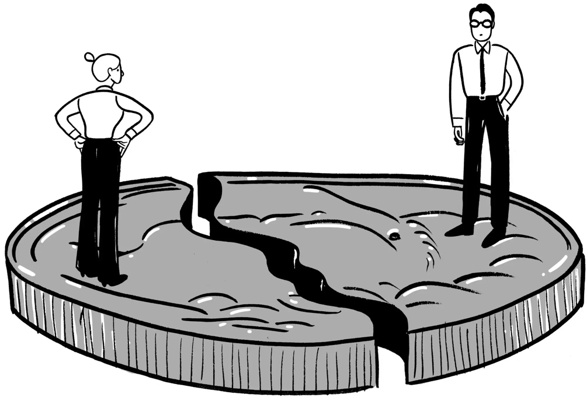
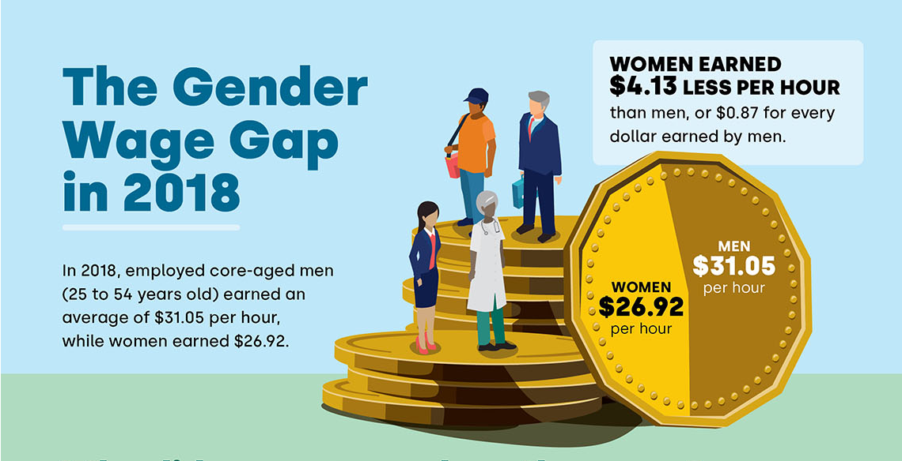

The Role of Women in the Workforce in Canada
Challenges and Opportunities
ILAC - International Language Academy of Canada
Mareen Sachdeva
2024-09-27
Agenda/Overview
- Key topics:
- The Gender Pay Gap
- Underrepresentation in Leadership
- Unequal Division of Unpaid Labor
- Addressing Counter-Arguments
- Rebuttals: Economic Benefits & Cultural Shifts
- The Future: A Collective Effort
- References
- Q&A
Introduction
The Gender Gap

Note. The illustration effectively highlights the persistent disparity in wages between men and women in the workforce [Infographic]. From Lipman, J. (2015). Opinion | let’s expose the gender pay gap. The New York Times. https://www.nytimes.com/2015/08/13/opinion/lets-expose-the-gender-pay-gap.html © 2024 The New York Times Company.
The Gender Pay Gap
- Women earn less than men
- Occupational segregation lowers pay
- Bias impacts pay for women
The Gender wage gap in 2018

Note. Data shown are for employees between the age of 25 and 54 [Infographic]. From Canada’s gender wage gap narrows: Women earn $4.13 less than men per hour - national | globalnews.ca. (2019). https://globalnews.ca/news/6001276/gender-wage-gap-women-canada/ ©Her Majesty the Queen in Right of Canada, as represented by the Minister of Industry, 2019.
Underrepresentation in Leadership
Women in CEO and executive positions
Note. Numbers from Statistics Canada released in 2019 show 19.4 per cent of board of director positions are held by women in Canada [Photograph]. From Bennardo, M. (2019). Women hold less than 20. CBC News. https://www.cbc.ca/news/business/statistics-canada-women-corporate-boards-1.5125995 ©2024 CBC/Radio-Canada. All rights reserved.
- Few women lead major companies.
- Diverse leadership boosts profits.
- Support women: mentor, sponsor, promote.
Unequal Division of Unpaid Labor
It’s a Guy Thing

Note. Natalie Decker sits in her truck during practice for the NASCAR Gander Outdoor Truck Series World of Westgate Las Vegas 200 in Las Vegas Sept. 13, 2019 [Photograph]. From News, A. B. C. (n.d.). Female NASCAR drivers on the challenges in competing in the male-dominated sport. https://abcnews.go.com/Sports/female-nascar-drivers-challenges-competing-male-dominated-sport/story?id=82838424 © 2024 ABC News.
- Unpaid labor burdens women.
- “Second shift” hurts careers.
- Shared responsibility is key.
Counter-Arguments
Child Care in Canada
Note. children playing and learning together in a vibrant, structured environment [Photograph]. From Belderbos, H. (2024). Achieving affordable child care in canada. https://www.openaccessgovernment.org/achieving-affordable-child-care-in-canada/179301/ © Adjacent Digital Politics Ltd.
- Affordable childcare boosts economies.
- Equality benefits businesses too.
- Investing in families is crucial.
Rebuttals: Economic Benefits & Debunking Stereotypes
Career Barries
Note. Professional women confidently engaging in the workplace [Photograph]. From Gourtsilidou, M. (2022). Top career barriers women face in technology sector. https://ceoworld.biz/2022/04/01/top-career-barriers-women-face-in-technology-sector/ © The CEOWORLD magazine LTD 2024. CEOWORLD and ‘CEOWORLD magazine’ are trademarks of The CEOWORLD magazine Ltd.
- Data disproves “ambition gap” myth.
- Women face more career barriers.
- Evaluate systems, not stereotypes.
Solutions: Policy Changes & Cultural Shifts
The fight for an equal voice
Note. Members of the Voice of Women, Women’s Liberation Movement, New Feminists and Young Socialists demonstrated at Queen’s Park in April 1970, asking support for a bill to ensure that women get equal pay for equal work.From Heritage Matters - Women’s rights are human rights The fight for an equal voice. (n.d.). https://www.heritage-matters.ca/articles/womens-rights-are-human-rights-the-fight-for-an-equal-voice © Ontario Heritage Trust, unless otherwise indicated.
- Policies must support equality.
- Change requires cultural shifts.
- Challenge norms; dismantle bias.
The Future: A Collective Effort
- Gender equality benefits everyone.
- Challenge inequality; be an ally.
- Collective action creates change.
Gender equality
Note. Young people interested in creating a positive difference in the world [Photograph]. From International day of the girl. (n.d.). https://plancanada.ca/get-involved/active-campaigns/international-day-of-the-girl © 2024 Plan International Canada Inc. Because I am a Girl, and Spread the Net names and associated logos are trademarks of Plan International Canada Inc.
.